# remotes::install_github("brunocarlin/tidy.outliers")Lecture 13
Unit 2: Review
Review Day!
Component 2: Working with Data
Build confidence in wrangling, visualizing, and analyzing data. This section covers importing and cleaning data sets, working with joins, and creating effective visualizations. You’ll also delve into study design, hypothesis testing, and statistical analyses spanning uni-variate, bivariate, and multivariate techniques.
Learning Outcomes
- Import, clean, and merge data sets from diverse sources using core
tidyversepackages. - Conduct hypothesis testing and interpret results.
- Create impactful visualizations to communicate findings.
We have covered a ton of material in unit 2.


Today
Tip
We will look at some public water quality data to examine the relationship between bicarbonate and magnesium/calcium along the Colorado River.
Motivation
The balance between bicarbonate and Mg+Ca in water determines hardness, alkalinity, and pH stability, with direct implications for ecosystem health, water treatment, and infrastructure maintenance. The sum of magnesium and calcium concentrations is a key factor in determining water hardness which can impact aquatic ecosystems, water treatment, and infrastructure due to scaling.
⬆️ bicarbonate + ⬆️ Ca/Mg: Indicates water passing through carbonate-rich geology (limestone/dolomite), leading to high hardness but good buffering capacity.
⬇️ bicarbonate + ⬆️ Ca/Mg: Suggests non-carbonate sources of Mg and Ca, potentially from industrial pollution or weathering of silicate rocks.
⬆️ bicarbonate + ⬇️ Ca/Mg: Could be influenced by inputs like agricultural runoff or natural dissolution of bicarbonates from atmospheric CO₂.
In this lab, we are interested in understanding the relationship between bicarbonate and magnesium/calcium in the Colorado River Basin using a set of gages that have been active over the last ~100 years
Namely, we are interested in:
- The trend of Bicarbonate over time
- The relationship of Bicarbonate to Magnesium + Calcium along the river
- The strength of a predictive model for Bicarbonate using the sum Magnesium Calcium
1. Data Import & Setup
Sometimes you need new libraries!
- We can install from CRAN with
install.packages("package_name") - We can install from GitHub with
remotes::install_github("username/package_name")
Start with our libraries
- Here we load the libraries we will use in this lab
tidyversefor data manipulationtidymodelsfor modelingdataRetrievalfor downloading dataflextablefor making nice tablesvisdatfor EDA
library(tidyverse)
#> ── Attaching core tidyverse packages ──────────────────────── tidyverse 2.0.0 ──
#> ✔ dplyr 1.1.4 ✔ readr 2.1.5
#> ✔ forcats 1.0.0 ✔ stringr 1.5.1
#> ✔ ggplot2 3.5.1 ✔ tibble 3.2.1
#> ✔ lubridate 1.9.4 ✔ tidyr 1.3.1
#> ✔ purrr 1.0.4
#> ── Conflicts ────────────────────────────────────────── tidyverse_conflicts() ──
#> ✖ dplyr::filter() masks stats::filter()
#> ✖ dplyr::lag() masks stats::lag()
#> ℹ Use the conflicted package (<http://conflicted.r-lib.org/>) to force all conflicts to become errors
library(tidymodels)
#> ── Attaching packages ────────────────────────────────────── tidymodels 1.2.0 ──
#> ✔ broom 1.0.7 ✔ rsample 1.2.1
#> ✔ dials 1.4.0 ✔ tune 1.3.0
#> ✔ infer 1.0.7 ✔ workflows 1.2.0
#> ✔ modeldata 1.4.0 ✔ workflowsets 1.1.0
#> ✔ parsnip 1.3.0 ✔ yardstick 1.3.2
#> ✔ recipes 1.1.1
#> ── Conflicts ───────────────────────────────────────── tidymodels_conflicts() ──
#> ✖ scales::discard() masks purrr::discard()
#> ✖ dplyr::filter() masks stats::filter()
#> ✖ recipes::fixed() masks stringr::fixed()
#> ✖ dplyr::lag() masks stats::lag()
#> ✖ yardstick::spec() masks readr::spec()
#> ✖ recipes::step() masks stats::step()
#> • Use tidymodels_prefer() to resolve common conflicts.
library(dataRetrieval)
library(flextable)
#>
#> Attaching package: 'flextable'
#>
#> The following object is masked from 'package:purrr':
#>
#> compose
library(visdat) We can predefine our sites of interest for expediency. We do this by creating a data frame with the SiteID and SiteName
atomicvectors.We can also predefine the variables we are interested in.
sites <- data.frame(SiteID = c("USGS-09069000", "USGS-09085000", "USGS-09095500",
"USGS-09152500", "USGS-09180000", "USGS-09380000"),
SiteName = c("Eagle", "Roaring Fork", "Colorado 3",
"Gunnison", "Dolores", "Colorado 5"))
vars <- c('Magnesium', 'Calcium', 'Bicarbonate')Explore the Sites
## Access
site.info <- whatWQPsites(siteid = sites$SiteID)
#> GET:https://www.waterqualitydata.us/data/Station/search?siteid=USGS-09069000%3BUSGS-09085000%3BUSGS-09095500%3BUSGS-09152500%3BUSGS-09180000%3BUSGS-09380000&mimeType=csv&count=no
## Make a map!
ggplot(site.info) +
borders("state",fill = "gray90", colour = "white") +
geom_point(aes(x = LongitudeMeasure, y = LatitudeMeasure, color = MonitoringLocationIdentifier)) +
theme_linedraw()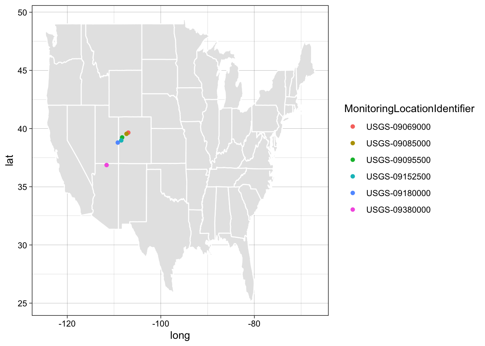
Data I/O
- We can use the
dataRetrievalpackage to download data from the USGS NWIS database. - This provides API access to the USGS NWIS database opposed to reading from a file.
# Data Access
nwis_wqp <- readWQPqw(siteNumbers = sites$SiteID, parameterCd = vars) |>
select(date = ActivityStartDate,
parameter = CharacteristicName,
SiteID = MonitoringLocationIdentifier,
value = ResultMeasureValue,
units = ResultMeasure.MeasureUnitCode,
media = ActivityMediaName) |>
filter(media=='Water') |>
left_join(sites, by = "SiteID") |>
select(contains('Site'), date, units, parameter, value)
#> GET:https://www.waterqualitydata.us/data/Result/search?siteid=USGS-09069000%3BUSGS-09085000%3BUSGS-09095500%3BUSGS-09152500%3BUSGS-09180000%3BUSGS-09380000&count=no&characteristicName=Magnesium%3BCalcium%3BBicarbonate&mimeType=csv
#> Waiting 2s for throttling delay ■■■■■■■■■■■■■■■
#> Waiting 2s for throttling delay ■■■■■■■■■■■■■■■■■■■■■■■■■■■■■■■
#> NEWS: Data does not include USGS data newer than March 11, 2024. More details:
#> https://doi-usgs.github.io/dataRetrieval/articles/Status.html
names(nwis_wqp)
#> [1] "SiteID" "SiteName" "date" "units" "parameter" "value"
## EDA!
glimpse(nwis_wqp)
#> Rows: 16,795
#> Columns: 6
#> $ SiteID <chr> "USGS-09180000", "USGS-09180000", "USGS-09180000", "USGS-091…
#> $ SiteName <chr> "Dolores", "Dolores", "Dolores", "Dolores", "Dolores", "Dolo…
#> $ date <date> 1968-11-18, 1968-11-18, 1968-11-18, 1969-01-29, 1969-01-29,…
#> $ units <chr> "mg/l", "mg/l", "mg/l", "mg/l", "mg/l", "mg/l", "mg/l", "mg/…
#> $ parameter <chr> "Bicarbonate", "Magnesium", "Calcium", "Calcium", "Magnesium…
#> $ value <dbl> 148, 72, 132, 98, 55, 168, 124, 43, 10, 17, 78, 112, 76, 27,…
skimr::skim(nwis_wqp)| Name | nwis_wqp |
| Number of rows | 16795 |
| Number of columns | 6 |
| _______________________ | |
| Column type frequency: | |
| character | 4 |
| Date | 1 |
| numeric | 1 |
| ________________________ | |
| Group variables | None |
Variable type: character
| skim_variable | n_missing | complete_rate | min | max | empty | n_unique | whitespace |
|---|---|---|---|---|---|---|---|
| SiteID | 0 | 1 | 13 | 13 | 0 | 6 | 0 |
| SiteName | 0 | 1 | 5 | 12 | 0 | 6 | 0 |
| units | 0 | 1 | 4 | 4 | 0 | 1 | 0 |
| parameter | 0 | 1 | 7 | 11 | 0 | 3 | 0 |
Variable type: Date
| skim_variable | n_missing | complete_rate | min | max | median | n_unique |
|---|---|---|---|---|---|---|
| date | 0 | 1 | 1926-01-11 | 2024-02-28 | 1966-11-14 | 4536 |
Variable type: numeric
| skim_variable | n_missing | complete_rate | mean | sd | p0 | p25 | p50 | p75 | p100 | hist |
|---|---|---|---|---|---|---|---|---|---|---|
| value | 0 | 1 | 94.76 | 67.48 | 1.6 | 33 | 79 | 150 | 590 | ▇▅▁▁▁ |
range(nwis_wqp$date)
#> [1] "1926-01-11" "2024-02-28"
table(nwis_wqp$units, nwis_wqp$parameter)
#>
#> Bicarbonate Calcium Magnesium
#> mg/l 5645 5577 5573
visdat::vis_dat(nwis_wqp)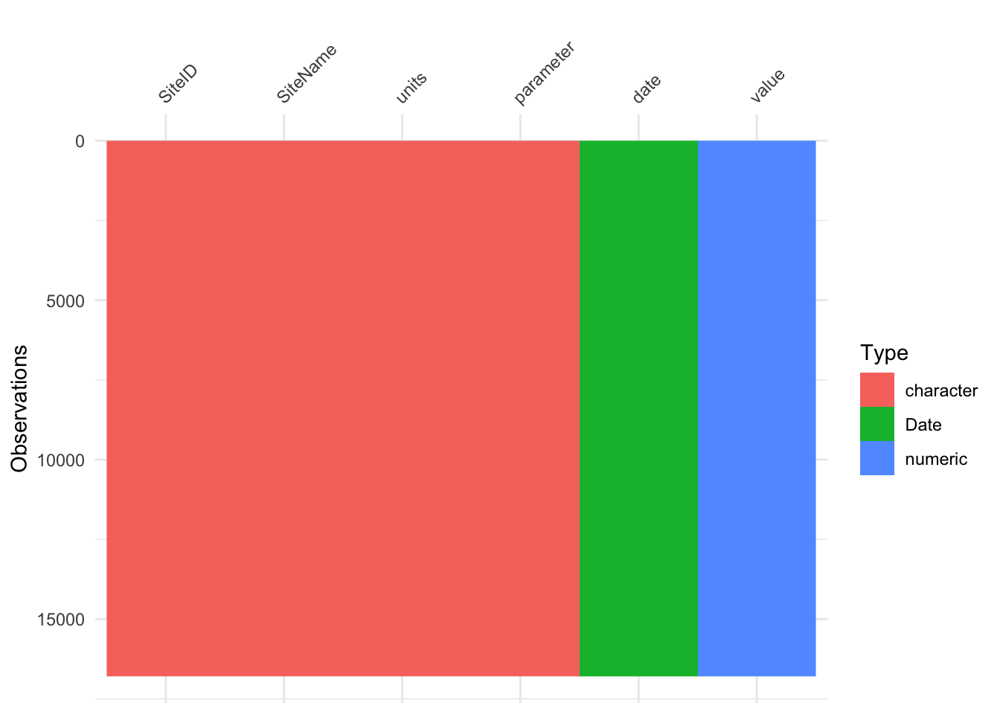
Data Tidying & EDA
# Compute Annual means
conc.annual <- nwis_wqp %>%
mutate(year=year(date)) %>%
group_by(SiteID, SiteName, year, parameter) %>%
summarize(annual_mean = mean(value, na.rm = TRUE)) |>
ungroup()
#> `summarise()` has grouped output by 'SiteID', 'SiteName', 'year'. You can
#> override using the `.groups` argument.
# EDA
vis_dat(conc.annual)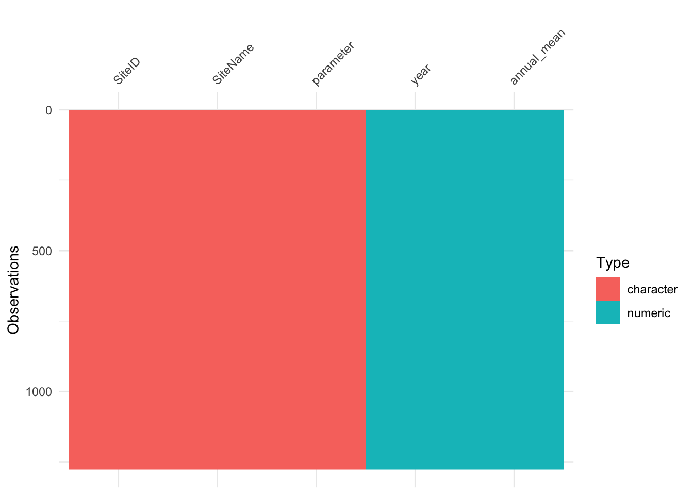
table(conc.annual$SiteID, conc.annual$parameter)
#>
#> Bicarbonate Calcium Magnesium
#> USGS-09069000 61 77 77
#> USGS-09085000 45 49 49
#> USGS-09095500 72 85 85
#> USGS-09152500 79 87 87
#> USGS-09180000 42 65 65
#> USGS-09380000 81 85 85
# Visualize the data
conc.annual %>%
ggplot(aes(x=year,y=annual_mean,color=SiteName)) +
geom_point() +
geom_smooth() +
facet_wrap(~parameter,scales='free_y') +
theme(legend.position='bottom') +
theme_bw()
#> `geom_smooth()` using method = 'loess' and formula = 'y ~ x'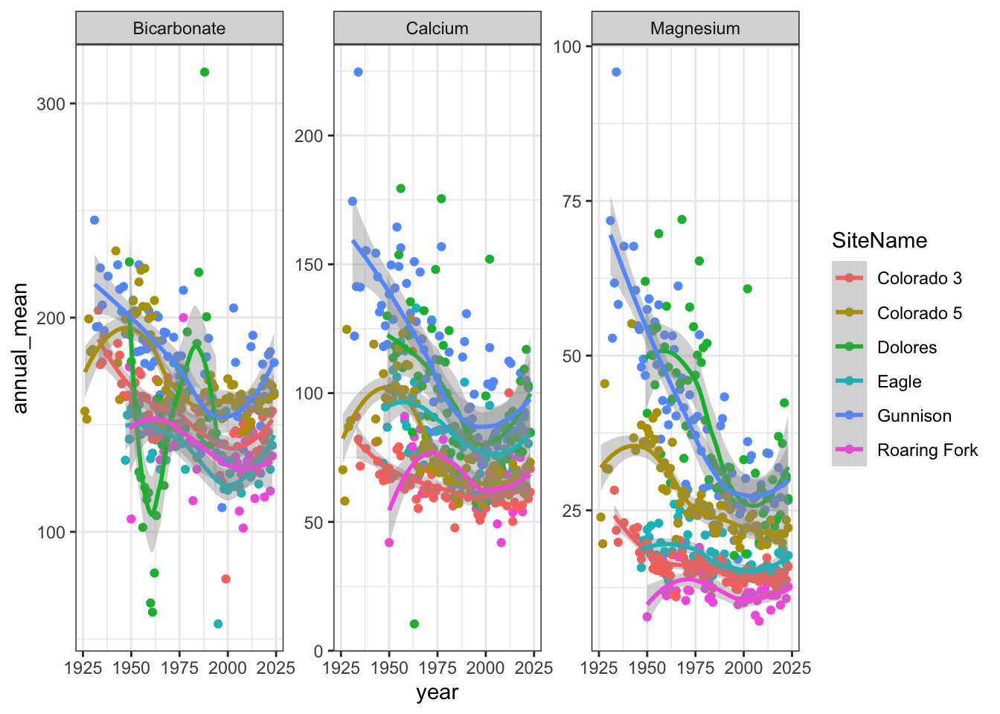
ggpubr::ggdensity(conc.annual,
x = "annual_mean",
fill = "SiteName",
facet.by = "parameter",
scales = "free")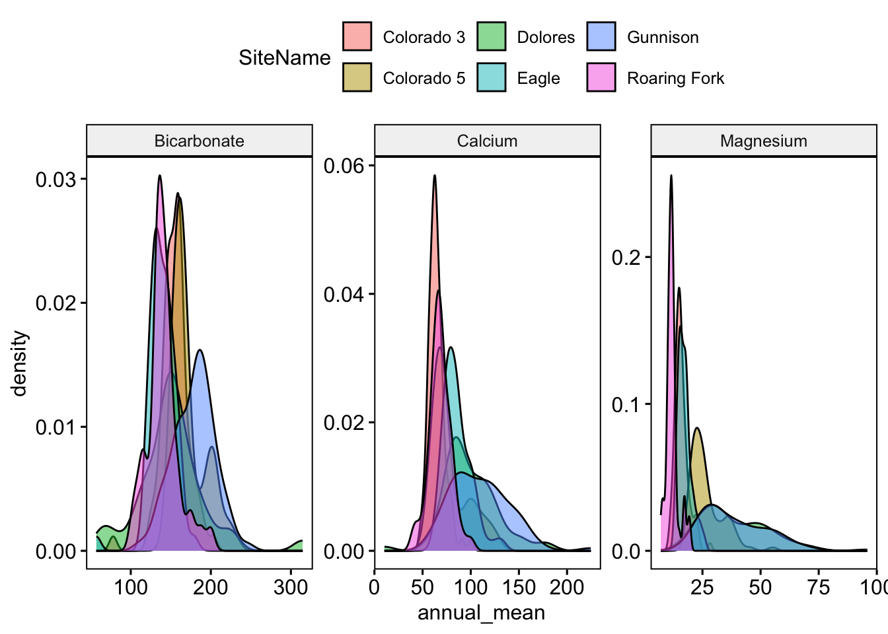
Modeling
# Long to wide, adding data
conc.wide <- conc.annual %>%
pivot_wider(names_from = parameter,
values_from = annual_mean) %>%
mutate(MgCa=Magnesium+Calcium)
# Model Assumptions
map_dbl(conc.wide[, c('Bicarbonate','Magnesium','Calcium', 'MgCa')],
~shapiro.test(.x)$p.value)
#> Bicarbonate Magnesium Calcium MgCa
#> 2.641685e-08 2.166554e-19 1.024677e-16 1.035285e-18
visdat::vis_cor(select(conc.wide, is.numeric), cor_method = "spearman")
#> Warning: Use of bare predicate functions was deprecated in tidyselect 1.1.0.
#> ℹ Please use wrap predicates in `where()` instead.
#> # Was:
#> data %>% select(is.numeric)
#>
#> # Now:
#> data %>% select(where(is.numeric))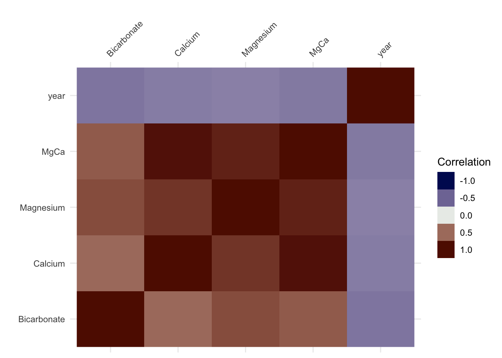
vis_dat(conc.wide)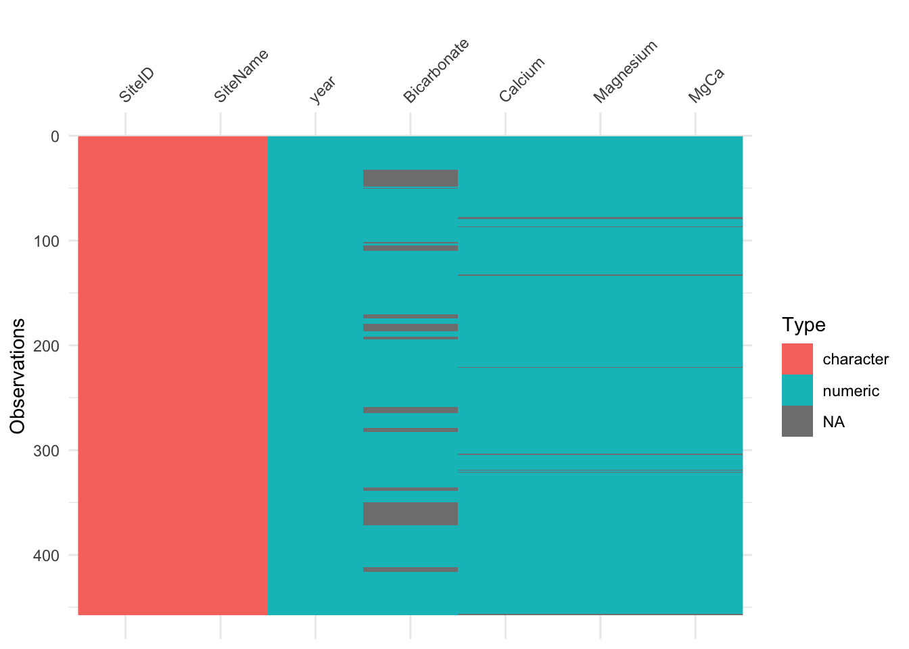
filter(conc.wide, is.na(Bicarbonate))
#> # A tibble: 77 × 7
#> SiteID SiteName year Bicarbonate Calcium Magnesium MgCa
#> <chr> <chr> <dbl> <dbl> <dbl> <dbl> <dbl>
#> 1 USGS-09069000 Eagle 1979 NA 78.3 16.0 94.3
#> 2 USGS-09069000 Eagle 1980 NA 100 21 121
#> 3 USGS-09069000 Eagle 1981 NA 75 14.1 89.1
#> 4 USGS-09069000 Eagle 1982 NA 65.5 13.4 78.9
#> 5 USGS-09069000 Eagle 1983 NA 94.3 18.3 113.
#> 6 USGS-09069000 Eagle 1984 NA 65.5 14.5 80
#> 7 USGS-09069000 Eagle 1985 NA 84.5 18 102.
#> 8 USGS-09069000 Eagle 1986 NA 80.2 17.0 97.2
#> 9 USGS-09069000 Eagle 1987 NA 84.5 17.2 102.
#> 10 USGS-09069000 Eagle 1988 NA 79 15.5 94.5
#> # ℹ 67 more rows
conc.wide = drop_na(conc.wide)
ggplot(conc.wide,aes(x=Bicarbonate,y=MgCa)) +
geom_point() +
geom_smooth(method = "lm") +
facet_wrap(~SiteName, scale = "free")
#> `geom_smooth()` using formula = 'y ~ x'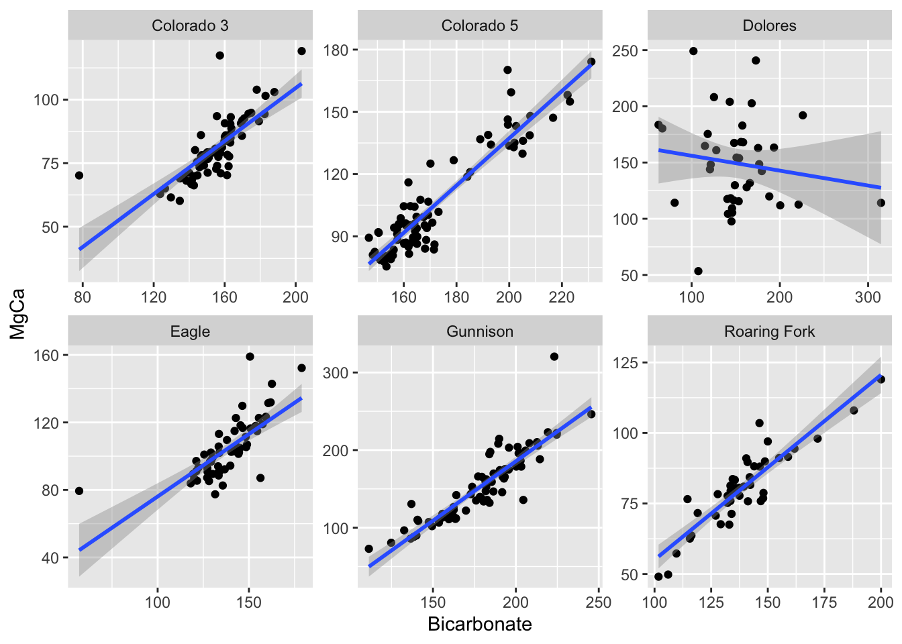
Feature Engineering
# Help
library(tidy.outliers)
# Feature Engineering
r = conc.wide |>
recipe() |>
step_sqrt(MgCa, Bicarbonate) |>
step_filter(!SiteName %in% "Dolores") |>
step_outliers_maha(MgCa, Bicarbonate) |>
step_outliers_remove(contains(r"(.outliers)")) |>
prep(conc.wide)
b = bake(r, new_data = NULL)
# EDA
glimpse(b)
#> Rows: 315
#> Columns: 7
#> $ SiteID <chr> "USGS-09069000", "USGS-09069000", "USGS-09069000", "USGS-0…
#> $ SiteName <chr> "Eagle", "Eagle", "Eagle", "Eagle", "Eagle", "Eagle", "Eag…
#> $ year <dbl> 1947, 1948, 1949, 1950, 1951, 1952, 1953, 1954, 1955, 1956…
#> $ Bicarbonate <dbl> 11.55061, 12.43041, 11.97169, 12.55070, 12.46842, 12.67450…
#> $ Calcium <dbl> 72.79167, 94.69697, 86.78571, 97.08333, 102.00000, 108.928…
#> $ Magnesium <dbl> 15.75833, 20.15758, 18.81786, 21.88333, 20.65385, 22.53571…
#> $ MgCa <dbl> 9.410101, 10.717021, 10.276360, 10.907184, 11.074920, 11.4…
glimpse(conc.wide)
#> Rows: 371
#> Columns: 7
#> $ SiteID <chr> "USGS-09069000", "USGS-09069000", "USGS-09069000", "USGS-0…
#> $ SiteName <chr> "Eagle", "Eagle", "Eagle", "Eagle", "Eagle", "Eagle", "Eag…
#> $ year <dbl> 1947, 1948, 1949, 1950, 1951, 1952, 1953, 1954, 1955, 1956…
#> $ Bicarbonate <dbl> 133.4167, 154.5152, 143.3214, 157.5200, 155.4615, 160.6429…
#> $ Calcium <dbl> 72.79167, 94.69697, 86.78571, 97.08333, 102.00000, 108.928…
#> $ Magnesium <dbl> 15.75833, 20.15758, 18.81786, 21.88333, 20.65385, 22.53571…
#> $ MgCa <dbl> 88.55000, 114.85455, 105.60357, 118.96667, 122.65385, 131.…
ggplot(b,aes(x=Bicarbonate,y=MgCa,color=SiteName)) +
geom_point() +
geom_smooth(method = "lm") +
facet_wrap(~SiteName, scale = "free")
#> `geom_smooth()` using formula = 'y ~ x'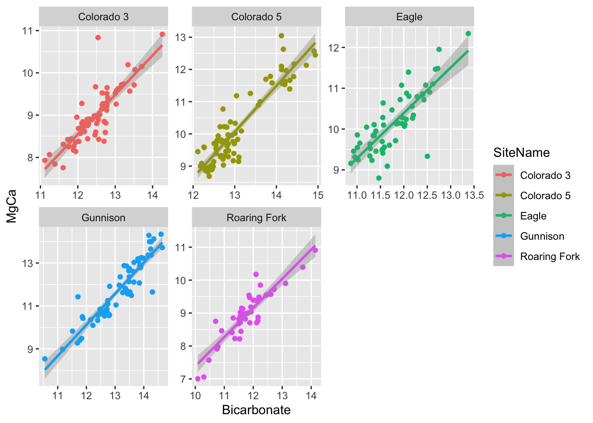
Modeling
# Bicarbonate Trends over the years
b |>
nest(data = -SiteName) |>
mutate(mod = map(data, ~lm(Bicarbonate ~ year, data = .x)),
summary = map(mod, broom::tidy)) |>
select(-data, -mod) |>
unnest(summary) |>
flextable::flextable()SiteName | term | estimate | std.error | statistic | p.value |
|---|---|---|---|---|---|
Eagle | (Intercept) | 39.57385972 | 4.386747659 | 9.021230 | 0.000000000001666369602781 |
Eagle | year | -0.01399886 | 0.002210230 | -6.333668 | 0.000000043332049866020944 |
Roaring Fork | (Intercept) | 40.55887785 | 9.596484598 | 4.226431 | 0.000129242080714668246093 |
Roaring Fork | year | -0.01446147 | 0.004819051 | -3.000896 | 0.004565782613797183218940 |
Colorado 3 | (Intercept) | 42.66668735 | 3.538553116 | 12.057665 | 0.000000000000000001507047 |
Colorado 3 | year | -0.01526277 | 0.001788248 | -8.535040 | 0.000000000002341725198104 |
Gunnison | (Intercept) | 51.46163885 | 7.326837474 | 7.023718 | 0.000000001817038439639663 |
Gunnison | year | -0.01932269 | 0.003693120 | -5.232079 | 0.000002038985041759279626 |
Colorado 5 | (Intercept) | 43.11291594 | 5.111983594 | 8.433696 | 0.000000000001483434518560 |
Colorado 5 | year | -0.01516966 | 0.002580801 | -5.877888 | 0.000000100616720493792293 |
# Bicarbonate vs. Magnesium + Calcium
b |>
nest(data = -SiteID) %>%
mutate(mod = map(data, ~lm(Bicarbonate ~ MgCa, data = .x))) %>%
mutate(mod.glance=map(mod,glance),
mod.tidy=map(mod,tidy)) %>%
select(-data, -mod) |>
unnest(mod.glance, mod.tidy) |>
distinct() |>
flextable::flextable()
#> Warning: `unnest()` has a new interface. See `?unnest` for details.
#> ℹ Try `df %>% unnest(c(mod.glance, mod.tidy))`, with `mutate()` if needed.SiteID | r.squared | adj.r.squared | sigma | statistic | p.value | df | logLik | AIC | BIC | deviance | df.residual | nobs | term | estimate | std.error | statistic1 | p.value1 |
|---|---|---|---|---|---|---|---|---|---|---|---|---|---|---|---|---|---|
USGS-09069000 | 0.6579555 | 0.6518476 | 0.3257045 | 107.7214 | 0.0000000000000116764226254997670908369 | 1 | -16.21843 | 38.43686 | 44.61819 | 5.940672 | 56 | 58 | (Intercept) | 5.7729268 | 0.58149985 | 9.927650 | 0.0000000000000594474770950825486787134699773 |
USGS-09069000 | 0.6579555 | 0.6518476 | 0.3257045 | 107.7214 | 0.0000000000000116764226254997670908369 | 1 | -16.21843 | 38.43686 | 44.61819 | 5.940672 | 56 | 58 | MgCa | 0.5922717 | 0.05706502 | 10.378892 | 0.0000000000000116764226254999343293487859486 |
USGS-09085000 | 0.8041263 | 0.7993489 | 0.3532772 | 168.3185 | 0.0000000000000004200703977738731966281 | 1 | -15.24875 | 36.49751 | 41.78111 | 5.116995 | 41 | 43 | (Intercept) | 3.6309783 | 0.62909498 | 5.771749 | 0.0000009134308989728205915777656601073353215 |
USGS-09085000 | 0.8041263 | 0.7993489 | 0.3532772 | 168.3185 | 0.0000000000000004200703977738731966281 | 1 | -15.24875 | 36.49751 | 41.78111 | 5.116995 | 41 | 43 | MgCa | 0.9091823 | 0.07007853 | 12.973763 | 0.0000000000000004200703977738611664993410798 |
USGS-09095500 | 0.7073202 | 0.7030161 | 0.3126364 | 164.3358 | 0.0000000000000000000820544045639745373 | 1 | -16.92113 | 39.84226 | 46.58775 | 6.646424 | 68 | 70 | (Intercept) | 5.6597650 | 0.53238561 | 10.630951 | 0.0000000000000004222349621961471518942129889 |
USGS-09095500 | 0.7073202 | 0.7030161 | 0.3126364 | 164.3358 | 0.0000000000000000000820544045639745373 | 1 | -16.92113 | 39.84226 | 46.58775 | 6.646424 | 68 | 70 | MgCa | 0.7578407 | 0.05911692 | 12.819354 | 0.0000000000000000000820544045639768845043502 |
USGS-09152500 | 0.8506780 | 0.8483078 | 0.3489742 | 358.9070 | 0.0000000000000000000000000010456819296 | 1 | -22.78608 | 51.57216 | 58.09532 | 7.672330 | 63 | 65 | (Intercept) | 6.2237860 | 0.36711301 | 16.953325 | 0.0000000000000000000000003689726929567777565 |
USGS-09152500 | 0.8506780 | 0.8483078 | 0.3489742 | 358.9070 | 0.0000000000000000000000000010456819296 | 1 | -22.78608 | 51.57216 | 58.09532 | 7.672330 | 63 | 65 | MgCa | 0.5874517 | 0.03100853 | 18.944840 | 0.0000000000000000000000000010456819295893397 |
USGS-09380000 | 0.8380254 | 0.8359218 | 0.2961462 | 398.3832 | 0.0000000000000000000000000000000361665 | 1 | -14.94800 | 35.89601 | 43.00435 | 6.753097 | 77 | 79 | (Intercept) | 7.1052767 | 0.30059144 | 23.637655 | 0.0000000000000000000000000000000000004877863 |
USGS-09380000 | 0.8380254 | 0.8359218 | 0.2961462 | 398.3832 | 0.0000000000000000000000000000000361665 | 1 | -14.94800 | 35.89601 | 43.00435 | 6.753097 | 77 | 79 | MgCa | 0.5867379 | 0.02939637 | 19.959538 | 0.0000000000000000000000000000000361664988382 |
# Predictive model
a <- b |>
nest(data = -SiteName) %>%
mutate(mod = map(data, ~lm(Bicarbonate ~ MgCa, data = .x)),
a = map2(mod, data, ~augment(.x, .y))) |>
unnest(a)
# Vizualize model and assumptions
ggplot(a, aes(x = .fitted, y = Bicarbonate)) +
geom_point() +
geom_smooth(col = "red") +
geom_smooth(method = "lm") +
facet_wrap(~SiteName, scales = "free")
#> `geom_smooth()` using method = 'loess' and formula = 'y ~ x'
#> `geom_smooth()` using formula = 'y ~ x'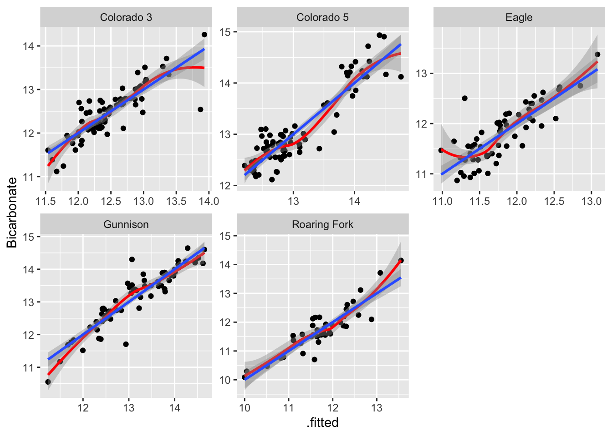
ggpubr::gghistogram(a, x = ".resid", fill = "SiteName", facet.by = "SiteID")
#> Warning: Using `bins = 30` by default. Pick better value with the argument
#> `bins`.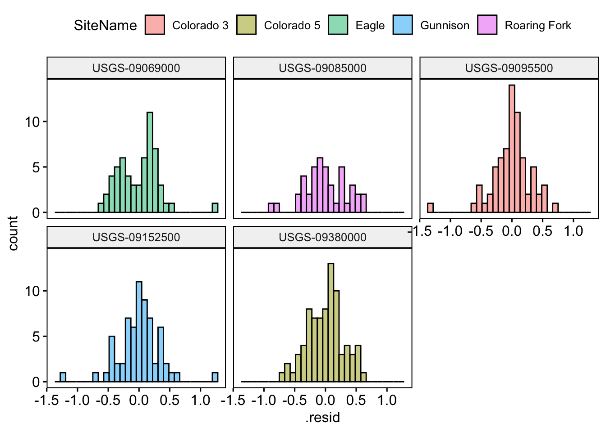
Summary
What did we find? Did this align with our expectations? Did the process we just go through make sense? Did any of the skills seem alien?
Assignment
As we have reached the half way point of this course, take a moment to reflect on your journey so far. Please respond to each of the following prompts in a few sentences. The questions are guiding but not all need to be answered directly and deviations are welcome
1. Unit 1: Think back to the beginning—how comfortable were you with setting up and using R, RStudio, Git, and GitHub? Do you now feel more confident in managing your computational environment and organizing your data? What aspects still feel challenging or unclear? Do you feel that the skills learned are transitioning into other areas of your “computational life”?
2. Unit 2 : As we wrap up our primary unit on data wrangling, visualization, and analysis, how do you feel about your ability to import, clean, and work with data? Are there specific techniques (joins, visualizations, statistical methods, nests/groups) that you feel you’ve improved on? Thinking back 8 weeks, are you proud of the progress you’ve made or feeling lost? What areas do you want to focus on strengthening as we continue?
3. Looking Ahead:: Are you making the progress you hoped for? If not, what barriers are you facing, and what steps could help you overcome them? If yes, what strategies have been working for you? What are your goals for the remainder of the course and how can the teaching team best support you in reaching them?
4. Modes of Learning: How do you feel about the methods in which content is shared? Have lectures been useful? Labs? Office hours? Daily Exercises? What would you like to see continue, and what would you like us to consider changing to help your growth?
We know the learning curve with coding is STEEP!, but if you feel you are hanging on, I promise you are doing well.
Please be honest with yourself (and with us) in this reflection—there are no wrong answers! This is an opportunity to take stock of your growth and identify where you’d like to go next, and, for us to adopt to how we support you best.